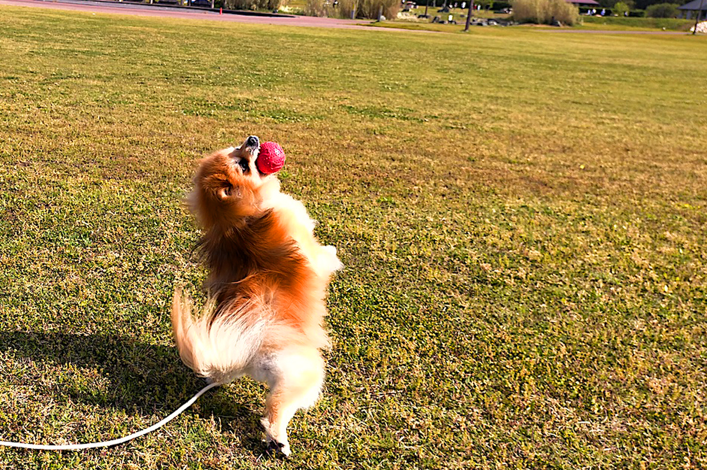
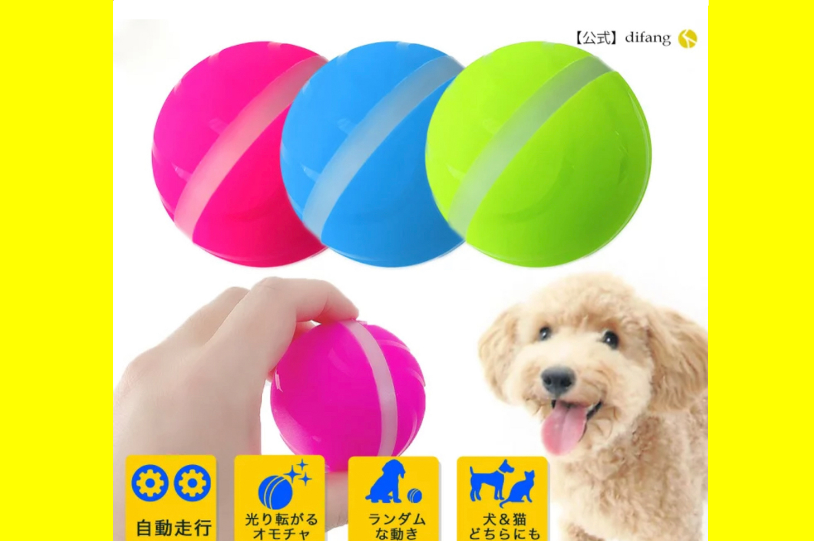

〜100均でも売ってるわんちゃんグッズ〜
犬と遊ぶ代表のおもちゃボール
咥えてよし、転がしてよし、取ってこいをさせてもよしの遊び方無限大の万能おもちゃです。

理由>>>丸呑みして窒息するリスクがある
犬が噛んでも良いように作ってないので強度がない、咥える事によって汚れやすい、などなど
上記のようなリスクがあるので必ず犬専用のボールを買いましょう。100均でも遊べる犬用ボールはあります。
ただ使用した感じ、強度には問題がある感じですね。 噛む力があるワンちゃんはきちんと耐久力のあるボールを選んだ方が良い気がします。
ワンちゃんも運動不足だと肥満になるのでボールなどを使ってしっかり遊んであげてください。